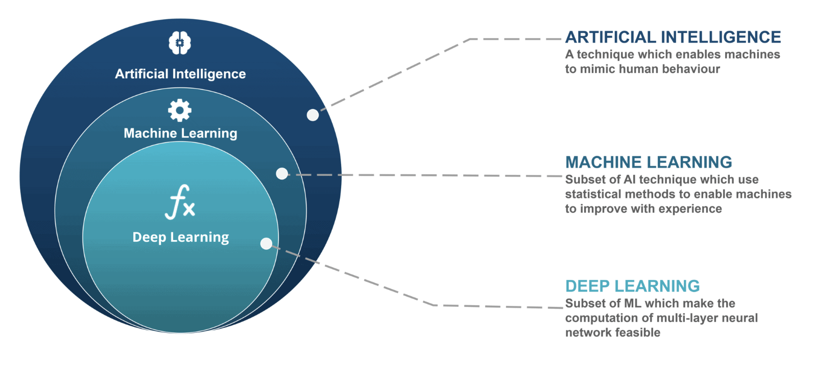
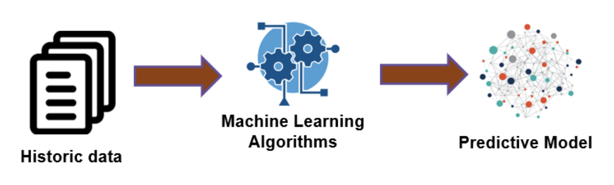
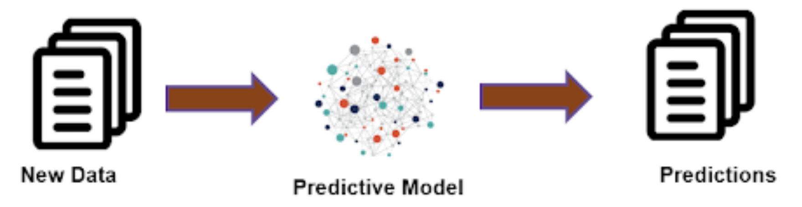
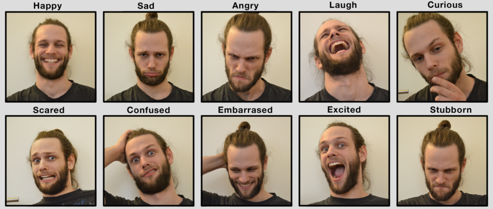

บทความนี้จะกล่าวถึงมโนทัศน์เบื้องต้นของการเรียนรู้ของเครื่อง (machine learning: ML) รายละเอียดมีดังนี้
What’s ML?
การเรียนรู้ของเครื่อง (ML) เป็นศาสตร์ย่อยแขนงหนึ่งภายใต้ศาสตร์ทางด้านสถิติและวิทยาการข้อมูล ซึ่งเกี่ยวข้องกับการใช้อัลกอริทึม (algorithms) ในการเรียนรู้/ค้นหาความรู้จากข้อมูล แล้วนำความรู้ที่ได้มาใช้งานตั้งแต่การบรรยายสภาพของข้อมูล (descriptive) การวินิจฉัย (diagnostic) เพื่อหาสาเหตุหรือปัจจัยที่ก่อให้เกิดผลลัพธ์ที่สนใจ การทำนาย (predictive) เพื่อสร้างโมเดลที่เรียนรู้ความสัมพันธ์ในข้อมูลเพื่อทำนายผลลัพธ์ของตัวแปรที่สนใจ ผลลัพธ์ที่ได้จากการทำนายนี้สามารถนำมาโมเดลเพื่อช่วยวางแผน/ตัดสินใจ (prescriptive) ดำเนินการเพื่อนำไปสู่ผลลัพธ์ที่คาดหวัง
What’s algorithms?
เทคนิคการเรียนรู้ของเครื่องต่าง ๆ ล้วนเป็นอัลกอริทึมที่ถูกออกแบบมาเพื่อวัตถุประสงค์ในการเรียนรู้/ค้นหาความรู้จากข้อมูล ดังนั้นผู้ที่ศึกษาทางด้านการเรียนรู้ของเครื่องจึงควรทราบความหมายของอัลกอริทึมในเบื้องต้นเอาไว้ด้วย
อัลกอริทึมคือกระบวนการที่มีขั้นตอนการดำเนินงานที่ชัดเจน โดยมีวัตถุประสงค์เพื่อทำงาน/แก้ปัญหาที่กำหนดให้สำเร็จ การใช้งานอัลกอริทึมไม่ได้จำกัดเฉพาะงานทางการสถิติและวิทยาการข้อมูลเท่านั้น ในชีวิตประจำวันเราก็มีการใช้อัลกอริทึมเพื่อดำเนินการต่าง ๆ อยู่เป็นประจำโดยไม่รู้ตัว ยกตัวอย่างเช่น การเดินทางจากบ้านไปยังร้านขายของสะดวกซื้อ งานดังกล่าวสามารถเขียนแยกแยะออกมาเป็นขั้นตอนการเดินทางโดยอาจเริ่มตั้งแต่การออกประตูบ้าน เลี้ยวขวา เดินตรงไป เมื่อพบสามแยกให้เลี้ยวขวาอีกครั้งจะพบร้านสะดวกซื้อทางด้านซ้ายมือ ขั้นตอนดังกล่าวก็คืออัลกอริทึมเช่นเดียวกัน
จากที่กล่าวไปแล้วว่าการเรียนรู้ของเครื่องมีวัตถุประสงค์หลักเพื่อเรียนรู้และสกัดความรู้ออกมาจากข้อมูล ซึ่งโดยทั่วไปหากจะใช้การเรียนรู้ของเครื่องในการทำงานแล้ว ข้อมูลดังกล่าวมักจะมีปริมาณมากพอสมควรไปจนถึงข้อมูลขนาดใหญ่ (big data) นอกจากปริมาณแล้วยังอาจมีความซับซ้อนในด้านของจำนวนตัวแปรและลักษณะของตัวแปรในข้อมูล อัลกอริทึมที่ใช้ในการเรียนรู้ของเครื่องนั้นย่อมต้องมีความซับซ้อนตามไปด้วย และการใช้คณิตศาสตร์เข้ามาเกี่ยวข้อง ซึ่งทำให้การดำเนินอัลกอริทึมดังกล่าวจะใช้การเขียนโปรแกรมเพื่อให้คอมพิวเตอร์ประมวลผลหรือเรียนรู้ข้อมูลด้วยอัลกอริทึมที่กำหนดแทนมนุษย์
AI vs ML vs DL
บางทีเรามักพบว่ามีการใช้คำศัพท์ AI, ML หรือ DL ปะปนกันไปเหมือนกับว่าเป็นสิ่งเดียวกัน อย่างไรก็ตามคำศัพท์ทั้ง 3 คำนี้มีทั้งส่วนที่เหมือนและแตกต่างกัน รายละเอียดมีดังนี้

AI ย่อมาจาก Artificial Intelligent เป็นเทคนิคหรือวิธีการที่นักวิทยาการข้อมูลใช้เพื่อพัฒนาโปรแกรมคอมพิวเตอร์ รวมถึงหุ่นยนต์หรือจักรกลที่สามารถเลียนแบบการทำงานต่าง ๆ ของมนุษย์ได้ AI จะมีความสามารถในการทำงานใกล้เคียงหรือดีกว่ามนุษย์ ทั้งความสามารถในการจดจำ จำแนก และตัดสินใจดำเนินงานเองโดยอาศัยข้อมูลที่เป็นไปได้ทั้งข้อมูลตัวเลข ข้อความ รูปภาพ และเสียง ตัวอย่างของ AI เช่น รถยนต์หรือยานพาหนะไร้คนขับ, AlphaGo - DeepMind, Chatgpt เป็นต้น
Machine Learning (ML) เป็นกลุ่มของเทคนิคหรือศาสตร์ย่อยแขนงนึงภายใต้ AI ที่เกี่ยวข้องกับการใช้ประยุกต์ใช้ทฤษฎีทางสถิติและคณิตศาสตร์เพื่อเรียนรู้หรือสกัดสารสนเทศจากข้อมูล สารสนเทศดังกล่าวสามารถนำมาใช้ได้หลายลักษณะ ทั้งการบรรยาย อธิบาย ทำนาย และตัดสินใจ ML ถือเป็นส่วนประกอบที่สำคัญที่สนับสนุนการทำงานของ AI
Deep Learning (DL) เป็นแขนงย่อย (subdivision) ของ ML ที่เกี่ยวข้องกับการใช้เทคนิคที่เรียกว่าเครือข่ายประสาทเทียม (artificial neural network: ANN) ที่มีความลึกของเครือข่ายหลายชั้นเพื่อเรียนรู้หรือสกัดสารสนเทศจากข้อมูล แต่ลักษณะเฉพาะตัวที่โดนเด่นของ DL คือเครือข่ายประสาทเทียมที่ใช้ในการเรียนรู้นั้นถูกพัฒนาขึ้นเลียนแบบการทำงานของเซลล์เครือข่ายสมองของมนุษย์ การเรียนรู้ของเครื่องที่ใช้ DL จึงสามารถเรียนรู้ข้อมูลที่มีความซับซ้อนเช่น ข้อความ ภาพ และเสียงได้มีประสิทธิภาพมากกว่าการใช้เทคนิค ML แบบปกติ
Types of ML
เทคนิคการเรียนรู้ของเครื่องอาจจำแนกได้เป็น 3 ประเภท ได้แก่ การเรียนรู้ที่มีการชี้นำ (supervised learning) การเรียนรู้แบบไม่มีการชี้นำ (unsupervised learning) และการเรียนรู้แบบที่มีการเสริมแรง (reinforcement learning) รายละเอียดมีดังนี้
Supervised Learning
Supervised learning เป็นการเรียนรู้ของเครื่องที่มีวัตถุประสงค์เพื่อพัฒนาโมเดลหรืออัลกอริทึมที่มีความสามารถในการทำนายค่าของตัวแปรตามของหน่วยข้อมูลที่สนใจด้วยข้อมูลของตัวแปรอิสระของหน่วยข้อมูลนั้น หากกล่าวให้เฉพาะเจาะจงขึ้น supervised learning เป็นกลุ่มของอัลกอริทึมที่จะเรียนรู้รูปแบบความสัมพันธ์ระหว่างตัวแปรอิสระกับตัวแปรตาม และใช้รูปแบบความสัมพันธ์ที่เรียนรู้จากข้อมูลในอดีตนี้ในการทำนายข้อมูลที่ไม่ทราบค่าที่จะเกิดขึ้นในอนาคต เช่น ผู้พัฒนาคอสเรียนออนไลน์ใช้ supervised learning เพื่อทำนายผลการเรียนของนักเรียน หรือแนวโน้มการ drop out ของนักเรียนในคอสเรียน โดยอิงจากพฤติกรรมการเรียนที่แสดงในระบบการเรียนรู้ออนไลน์
ในเชิงเทคนิคเรียกชุดข้อมูลที่นำมาให้อัลกอริทึมเรียนรู้ว่า ชุดข้อมูลฝึกหัด (training dataset) และผลผลิตที่ได้จากการเรียนรู้ของอัลกอริทึมคือ โมเดลทำนาย (predictive model) ที่จะใช้เป็นเครื่องมือสำหรับทำนาย ผลลัพธ์ที่ได้จากการทำนายเรียกว่า ค่าทำนาย (predicted value) ทั้งนี้ค่าทำนายสามารถเป็นไปได้ทั้งตัวเลข และคุณลักษณะหรือประเภทของหน่วยข้อมูล รูปต่อไปนี้แสดงความสัมพันธ์ระหว่าง ชุดข้อมูลฝึกหัด อัลกอริทึม และโมเดลทำนาย

และรูปต่อไปนี้แสดงความสัมพันธ์ระหว่างชุดข้อมูลในอนาคต (หรือ new data) กับโมเดลทำนาย และค่าทำนาย

จากที่กล่าวในข้างต้นจะเห็นว่าหากผู้วิเคราะห์จะใช้ supervised learning สิ่งสำคัญที่จำเป็นจะต้องมีก่อนการดำเนินงานในขั้นตอนอื่น ๆ คือ ชุดข้อมุลฝึกหัด การได้มาซึ่งชุดข้อมูลนี้อาจจะต้องเริ่มจากการวิเคราะห์งานว่ามีตัวแปรตามอะไรบ้าง และตัวแปรอิสระที่จะสามารถทำนายตัวแปรตามดังกล่าวได้นั้นควรมีตัวแปรใดบ้าง
ประเด็นถัดมาคือแหล่งข้อมูล หลายกรณีผู้วิเคราะห์สามารถเก็บรวบรวมข้อมูลได้ทั้งการเก็บรวบรวมข้อมูลเอง และการเก็บรวบรวมจากแหล่งข้อมูลทุติยภูมิไม่ว่าจะเป็นฐานข้อมูลที่เกี่ยวข้อง log file หรือการเก็บเกี่ยวข้อมูลจาก website ซึ่งการเก็บรวบรวมข้อมูลในลักษณะนี้บ่อยครั้งที่ผู้วิเคราะห์จำเป็นต้องดำเนินการกำหนด label ของตัวแปรตามเองด้วย ยกตัวอย่างเช่น การพัฒนาโมเดลเพื่อจำแนกอารมณ์ความรู้สึกจากใบหน้าของนักเรียนในชั้นเรียนออนไลน์ ในกรณีนี้ชุดข้อมูลฝึกหัดคือรูปภาพใบหน้าของนักเรียนจำนวนหนึ่งที่มีการแสดงอารมณ์หรือความรู้สึกที่หลากหลาย ซึ่งผู้วิเคราะห์จะต้องกำหนด label ให้กับใบหน้าในรูปแบบต่าง ๆ เองว่าการแสดงสีหน้าในแต่ละแบบนั้นหมายถึงความรู้สึกแบบใดตามขอบเขตของการดำเนินงาน

ประเด็นที่เหลือเป็นเรื่องของอัลกอริทึมที่จะใช้ในการเรียนรู้ข้อมูล โดยปกติแล้วอัลกอริทึมแต่ละตัวจะมีจุดเด่นและข้อจำกัดที่แตกต่างกัน ส่งผลให้ประสิทธิภาพในการทำนายแตกต่างกันไปตามแต่ละสถานการณ์ การพัฒนาโมเดลทำนายจึงอาจต้องทดลองใช้อัลกอริทึมมากกว่าหนึ่งตัว และเรียนรู้ของอัลกอริทึมแต่ละตัวมักต้องเป็นกระบวนการทวนซ้ำ เพื่อที่จะสามารถปรับแต่งค่าพารามิเตอร์ของอัลกอริทึมให้เหมาะสม เพื่อให้อัลกริทึมดังกล่าวสามารถเรียนรู้ข้อมูลได้อย่างมีประสิทธิภาพสูงสุด ตัวอย่างอัลกอริทึมในกลุ่ม supervised learning เช่น regression, K-NN, decision tree, random forest, support vector machine หรือ neural network เป็นต้น